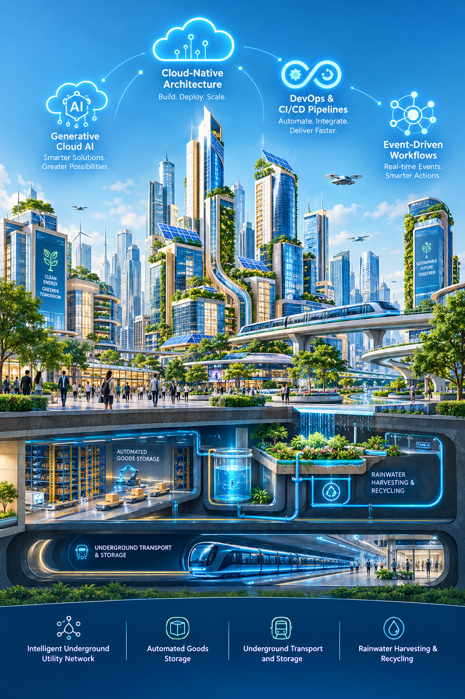

Building the Intelligent Cloud-Native City
A future-ready urban paradigm uniting cloud-native computing, autonomous generative AI, serverless scalability, and automated CI/CD pipelines with regenerative underground infrastructure and green sustainability.

How Cloud, AI, Automation & Sustainability Work Together
In our vision, four powerful pillars unite to create a living, self-healing, and deeply connected smart metropolis that serves both people and the planet.
Technology & Nature in Complete Harmony
Traditional cities struggle with traffic jams, power outages, and carbon emissions because their systems operate in isolation. Our project re-imagines urban life by connecting four core forces into a single living operating system:
Cloud technology gathers real-time data from every corner of the city. Artificial intelligence analyzes that data to predict traffic rushes, solar generation, and water demand. Automation acts instantly on those predictions—adjusting signals, rerouting underground pods, and balancing power grids. Meanwhile, sustainable infrastructure ensures every watt is green, every drop of water is recycled, and the surface stays quiet and park-filled.
Cloud Technology
The digital backbone syncing buildings, utilities, and citizen services with 99.999% resilience.
Artificial Intelligence
Predictive machine intelligence forecasting mobility surges, power loads, and weather patterns.
Intelligent Automation
Serverless CI/CD triggers operating underground transit pods, water valves, and logistic elevators in milliseconds.
Sustainable Infrastructure
Solar building envelopes, 100% circular water bio-filtration, and noise-free surface green spaces.
Cloud Brain & Telemetry
IoT sensors throughout buildings, roads, and sub-levels stream continuous telemetry into cloud-native event brokers.
Generative AI Decisioning
Cloud AI analyzes weather patterns, mobility traffic, and solar storage to generate micro-adjustments in real-time.
Automated CI/CD Actuation
Serverless pipelines trigger automated robotic valves, metro routing schedules, and subterranean storage elevators.
Sustainable Closed Loop
Rainwater is filtered, solar arrays feed storage batteries, and urban living thrives in quiet harmony with nature.
Five Core Concepts
The architectural building blocks driving the intelligent city's software and physical infrastructure.
Cloud-Native Architecture
Containerized microservices running resiliently across hybrid distributed clouds to power municipal utilities with self-healing uptime and zero single point of failure.
Serverless Scalability
Compute and municipal resources that dynamically scale from zero to peak demand within milliseconds—eliminating idle energy waste and maximizing green efficiency.
Generative Cloud AI
Predictive neural intelligence modeling weather, commuter surges, and renewable energy loads to orchestrate smart city decisions before bottlenecks ever form.
DevOps & CI/CD Pipelines
Continuous deployment pipelines adapted for smart physical infrastructure—testing, verifying, and rolling out sensor firmware and traffic updates with zero interruption.
Event-Driven Workflows
Sub-second event triggers connecting IoT sensors, water telemetry, transit grids, and emergency alerts into responsive, autonomous city-wide actions.
Smart Underground Infrastructure
Moving heavy transit, storage, and utility pipelines beneath the surface allows cities to reclaim daylight, clean air, and greenery above.
Intelligent Underground Utility Network
Multi-utility conduits carrying fiber optic lines, smart power cables, and pressurized water grids, monitored 24/7 by autonomous robotic diagnostic units.
Automated Goods Storage
Robotic Automated Storage and Retrieval Systems (ASRS) managing urban cargo, e-commerce parcels, and emergency supplies beneath street level.
Underground Transport and Storage
High-speed electric subterranean transit corridors and automated logistics pods moving passengers and freight rapidly without surface noise or traffic.
Rainwater Harvesting and Recycling
Bio-filtration aquifers and smart cistern networks capturing monsoon and storm runoff to purify and supply 100% circular water for city green spaces.
Intelligent Underground Utility Network
Our Vision for Tomorrow
A cohesive vision where urban architecture, nature, and computational ecosystems evolve in total synergy.
Smart Buildings
Kinetic self-shading facades, AI-tuned microclimates, and responsive structural sensors that minimize energy consumption in real time.
Green Spaces
Cascading sky gardens, native urban biophilic corridors, and green rooftop canopies that naturally purify air and cool the cityscape.
Solar Energy
Photovoltaic architectural glass, solar building skins, and smart distributed microgrids harvesting clean sunlight for all municipal operations.
AI-Powered Systems
Predictive neural networks continuously balancing grid loads, preventing utility anomalies, and coordinating autonomous emergency responses.
Smart Transportation
Zero-emission autonomous electric shuttles, elevated monorails, and subterranean transit loops keeping streets safe, clean, and pedestrian-first.
Sustainable Resource Management
Closed-loop circular recovery, automated pneumatic organic sorting, and zero-waste urban metabolism repurposing 100% of urban resources.
Connected Infrastructure
City-wide ultra-low latency mesh networks syncing every streetlight, water valve, transit hub, and building into a real-time digital twin replica.
EcoPulse : Smart Waste & Ecological Grid
An intelligent, closed-loop civic operating system integrating automated underground transit pods, citizen reporting, and deterministic rule-based priority routing connected directly to live MongoDB telemetry.
EcoPulse Municipal Sensor Array Synchronizing
Retrieving real-time waste hazard levels and hotspot clusters from MongoDB...
Report Waste
My Reports
Smart Recycling Advisor
Select any urban waste material to query segregation instructions, degradation half-life, and upcycling value:
PET Plastic Beverage Container
Standard Consumer PolymerCity Eco Tip: Empty liquids and crush before discarding. Automated optical sorting in subterranean vacuum ducts will direct this to the regional polymer extrusion plant.
Collection Information
Continuous Subterranean Vacuum Sweep (06:00 - 22:00) + High-Capacity Pods.
Next Scheduled Sub-surface Emptying: Today in 42 minsElectric Drone Patrols & Bio-Corridor Ground Shuttles (Daily 06:30 & 16:30).
Special Focus: Stormwater Runoff Filtration InspectionCurbside Pneumatic chutes connected to sub-surface collection conduits.
E-Waste & Hazardous drop-off: Civic Hub Saturdays 09:00 - 15:00Municipal Field Operations Dashboard
Real-time municipal dispatch controller. Transition status directly in MongoDB: Pending → Assigned → In Progress → Resolved.
Priority Engine (Rule-Based Matrix)
Our priority engine calculates waste clearance urgency using deterministic mathematical rules. Zero machine learning hallucinations, zero external cloud AI dependencies.
Interactive Priority Simulator
Smart Collection Queue
Active collection queue sorted by priority weight (Critical → High → Medium → Low) with automated vehicle dispatch suggestions:
Environmental Impact Dashboard
Direct mathematical calculations based on resolved reports in MongoDB:
Green Zone / Nature Protection
Active ecological sanctuaries continuously guarded against urban runoff and unauthorized illegal dumping:
Central Park Wetland Sanctuary
98% PurityRiverfront Biophilic Corridor
94% PurityNorth Forestry & Watershed
99% PurityEco Intelligence Panel
Transparent civic analytics and waste stream composition calculated directly from MongoDB documents:
EcoPulse prioritizes and routes waste using auditable rules, reproducible priority formulas, and real-time MongoDB queries. No synthetic black-box models or untrusted cloud predictions are used.
Underground Transportation Network
High-speed electric subterranean transit corridors and automated automated logistics pods moving passengers and freight rapidly without surface noise or traffic.
Line 01: Subterranean Passenger Transit Pod Loop
High-Speed Maglev Electric Pods • Dedicated Tube GridLine 02: Automated Goods Storage & Cargo AS/RS
Robotic Sub-Surface E-Commerce & Heavy Cargo FreightUnderground Waste Management Network
Pneumatic automated waste tubes suck waste from sidewalk drop-boxes into subterranean compactor silos, where autonomous waste pods haul containers to recycling centers with zero surface trucks and zero odor.
Automated Pneumatic Vacuum Duct Grid
Sub-Surface Pneumatic Airflow ConduitsAI Integration: Subterranean Tube Dispatch Optimizer
Dynamic Tube Routing Vector
AI engine calculates least-resistance pneumatic tube paths and subterranean pod loop vectors for active incidents:
Predictive Hotspot Pre-Positioning
Pre-positions subterranean collection pods beneath dense commercial hubs before bin sensors reach 100% capacity:
Surface Air Quality Interlock
Correlates subterranean waste velocity with city-wide air telemetry sensors to guarantee zero fugitive odor or particulate escape:
Connected Infrastructure: Unified Smart-City Digital Twin
All 5 civic layers—Surface Sensing, Cloud Backend, Underground Transit, Pneumatic Waste, and Nature Reserves—operating as a unified, real-time operating ecosystem.
When a waste report or transit surge is detected at Layer 1, Layer 2 processes priority in milliseconds, Layer 3 reroutes underground pods, Layer 4 triggers pneumatic evacuation, and Layer 5 protects the green biosphere.